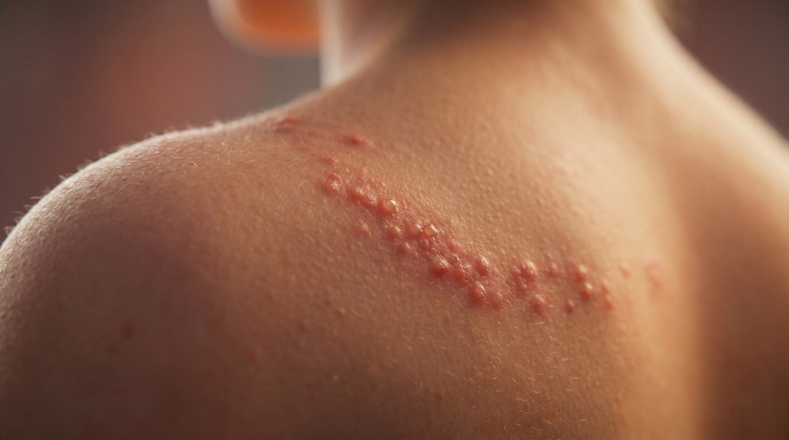
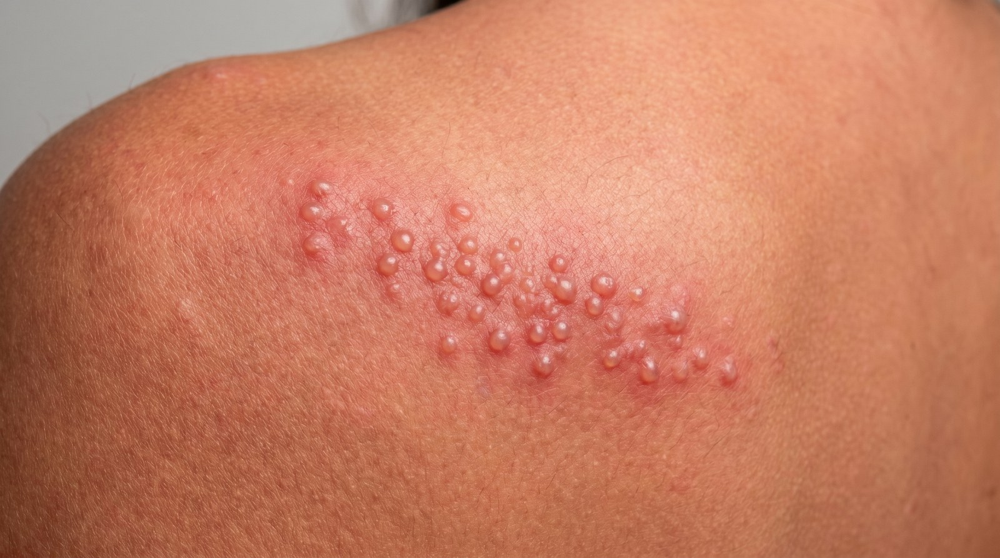
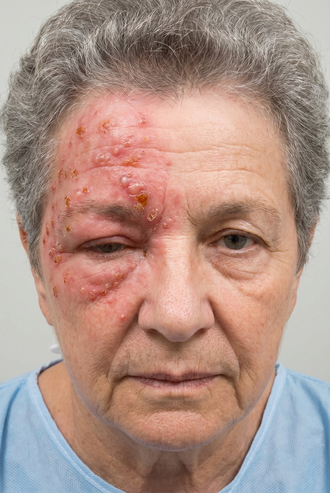
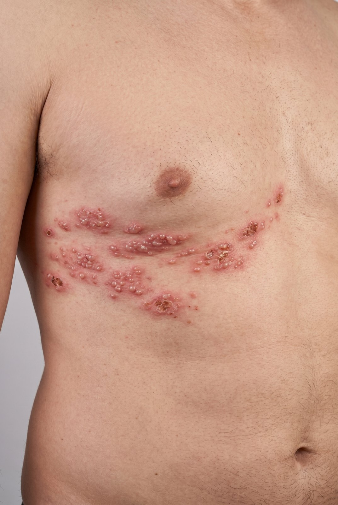
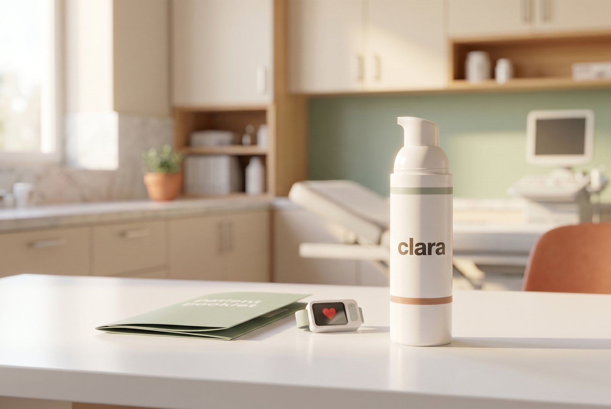

When shingles clears but the pain stays, the nerve itself has been hurt. Here is what is happening, what your doctor can do, and why this is the one nerve pain condition where a cream is best proven.
Shingles is a painful, blistering rash caused by the chickenpox virus waking up in the body. For most people it heals within two to four weeks.(1)
Sometimes the pain stays after the rash clears. When burning or shooting pain lasts three months or more in the same patch of skin, it is called post-herpetic neuralgia, or simply post shingles pain. It is the most common lasting effect of shingles, and the skin can become so sensitive that even light touch hurts.(1, 2)
The chickenpox virus never fully leaves. It hides for years in the nerves near your spine. When age, illness or stress lowers your defences, it can wake up, travel down a nerve, and erupt as the shingles rash.(2)
Along the way it can damage the nerve itself. Damaged nerves misfire, sending pain signals even when nothing is touching the skin. That is why the pain can outlast the rash, and why ordinary painkillers often do not help much.(2)


Age is the biggest factor: the risk climbs steeply after 60, so post shingles pain is uncommon in younger adults.(2) Other things that raise it: a weak immune system, diabetes, a severe shingles attack, or shingles on the face or eye.(2)
The good news: for most people the pain slowly eases over months, though for some it lasts a year or longer.(1)
The pain stays in one band of skin along the affected nerve, most often on the chest, the face or the neck. People usually feel two things at once:(2)
A telltale sign is that gentle touch hurts, so a shirt or a light breeze can set it off (doctors call this allodynia). Because it can be relentless, it often disturbs sleep and mood, which is part of why treating it matters.(2)
There is no scan or blood test for post shingles pain. A doctor recognises it from your story and a brief exam: nerve pain lasting three months or more, in the same area where you had the shingles rash.(2)


Extra tests like an MRI are only needed if something is unusual, such as pain that does not match a past rash. For most people, no further testing is needed.(2)
To a meaningful degree, yes. Two things help the most:(1)
Treatment is personalised and built up step by step. It usually starts with a pill and often adds something applied to the skin.(2)
Strongest evidence for a cream
Of all the nerve pain conditions, post shingles pain is where treating through the skin is best proven. The pain sits in one spot, so a cream works right where it hurts, with far less medicine reaching the rest of your body than a pill.(4)

Lidocaine calms the touch sensitive pain; capsaicin (from chili peppers) is another proven option.(4, 6, 7) A compound cream can combine a few of these in one preparation. The best studied mix pairs amitriptyline with ketamine, often with lidocaine; in studies of more than 700 people it eased pain about as well as a common nerve pill, with very little absorbed into the body.(5)
A starting point your clara doctor tailors to you. Not everyone receives every ingredient.
Amitriptyline and ketamine are the best studied pairing; lidocaine targets the touch sensitive pain; gabapentin may be added for misfiring nerves. Your clara doctor chooses the exact ingredients and strengths.(5)
The most sensible approach is simple: give a cream a fair four to six week trial as one part of a plan your clara doctor builds and monitors with you. A cream usually takes the edge off rather than erasing pain entirely, and because each one is compounded for you it is not approved by the FDA, so results can vary from person to person. Used as one piece of a wider plan, it is a reasonable option to try.(8, 9)
Never apply it to broken, cut, raw or burned skin, keep it well away from your eyes, do not cover it with tight dressings or heat, and store it out of reach of children and pets. Mild stinging, warmth or redness is common and usually settles. A clara doctor reviews every ingredient against your health, allergies and other medicines first.(8)
Send a quick note to your clara care team to request a cream trial. A Canadian licensed clara doctor reviews whether a compound cream fits your pain, your history and your other medicines before anything is made or shipped.
Request a cream trial →This guide is general education from your clara care team and is not a substitute for personal medical advice. Compounded creams are prepared for the individual, are not FDA approved, and their ingredients, doses and suitability are decided by your clara doctor based on your health, allergies and other medicines.